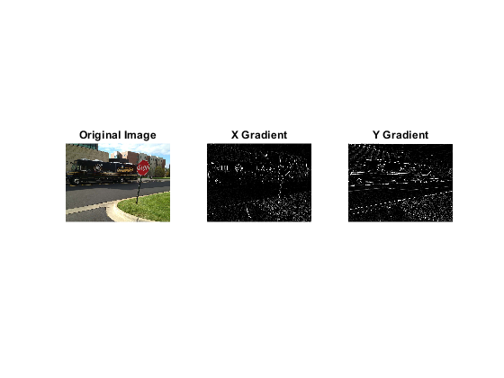

% Read the image into Matlab duImage = imread("DUandKentMobile.jpg"); % Convert the image to grayscale (black and white only) grayImage = rgb2gray(duImage); % Create the x and y gradient filters to begin the % edge detection algorithm Sx = [1 0 -1; 2 0 -2; 1 0 -1]; Sy = [1 2 1; 0 0 0; -1 -2 -1]; % Convolve each of the above filters with the checkerboard image % First we must convert the image into a double by using the 'double' % command and passing it the image variable name 'myImage' sobelXImage = conv2(double(grayImage), Sx, 'same'); sobelYImage = conv2(double(grayImage), Sy, 'same'); % Creating the first figure figure('Name', 'Original Image and Gradients'); % Display the original image subplot(1,3,1); imshow(duImage); title('Original Image'); % Display the X gradient image subplot(1,3,2); imshow(uint8(sobelXImage)); title('X Gradient'); % Display the Y gradient image subplot(1,3,3); imshow(uint8(sobelYImage)); title('Y Gradient'); % In order to ensure that the magnitude of the gradidents is calculated and % displayed properly we will use this command below which squares both of % the gradients and takes the square root of the sum E = sqrt(sobelXImage.^2 + sobelYImage.^2); % Adding a threshold of 50 to the image to limit the number of edges that % are detected threshold50 = 50; edgeDetectedImage50 = (uint8(E) > threshold50) * 255; % Creating the second figure figure('Name', 'Threshold 50'); imshow(edgeDetectedImage50); % Adding a threshold of 100 to the image to limit the number of edges that % are detected threshold100 = 100; edgeDetectedImage100 = (uint8(E) > threshold100) * 255; % Creating the third figure figure('Name', 'Threshold 100'); imshow(edgeDetectedImage100); % Adding a threshold of 150 to the image to limit the number of edges that % are detected threshold150 = 150; edgeDetectedImage150 = (uint8(E) > threshold150) * 255; % Creating the fourth figure figure('Name', 'Threshold 150'); imshow(edgeDetectedImage150); % Adding a threshold of 200 to the image to limit the number of edges that % are detected threshold200 = 200; edgeDetectedImage200 = (uint8(E) > threshold200) * 255; % Creating the fifth figure figure('Name', 'Threshold 200'); imshow(edgeDetectedImage200);